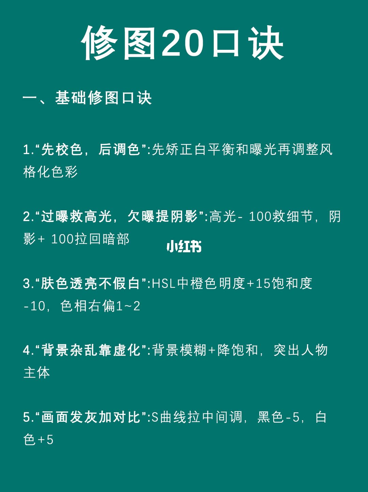
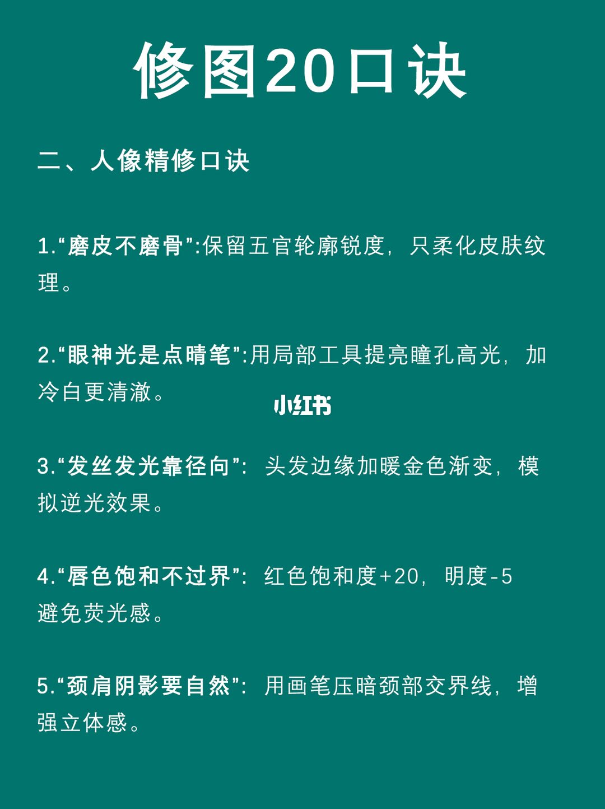
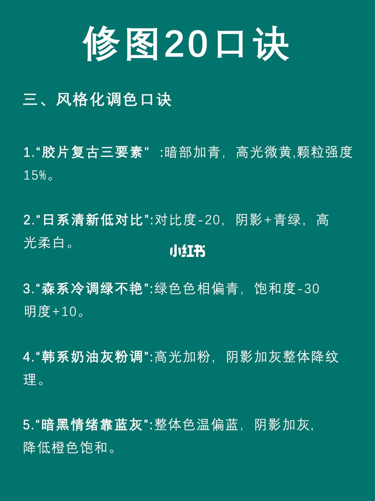
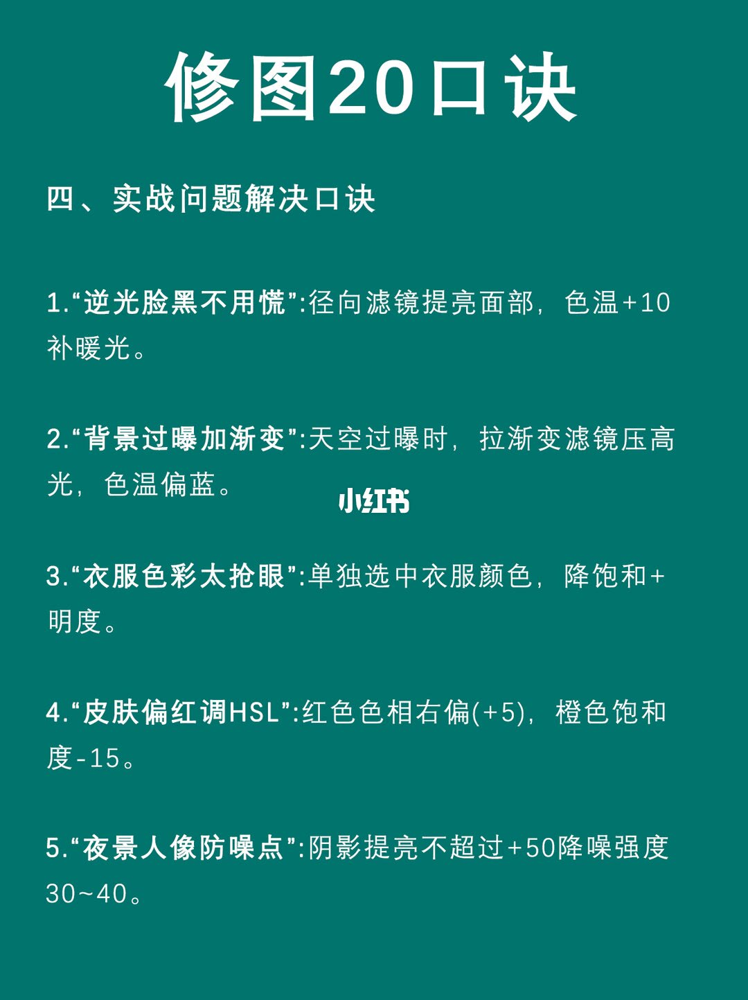
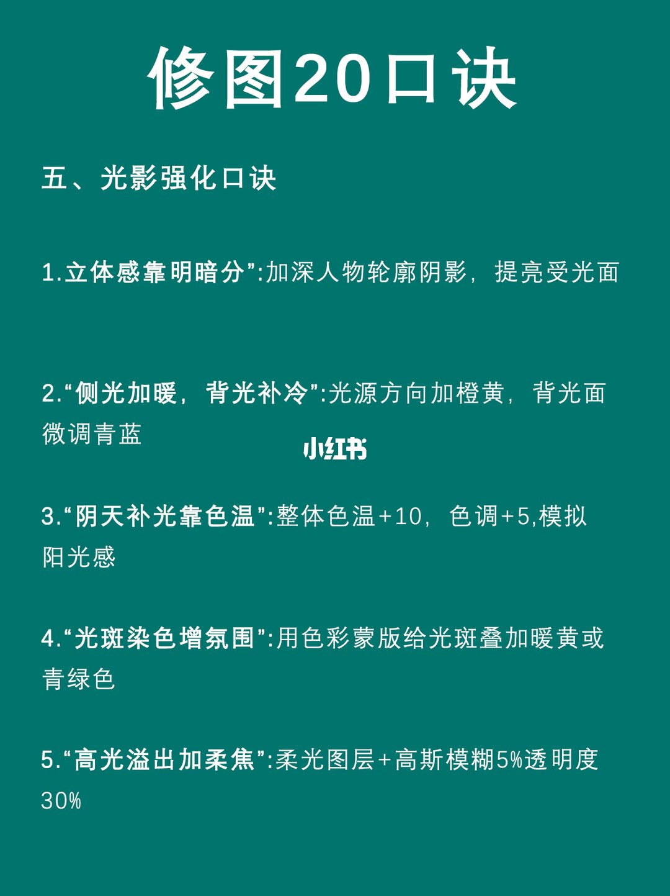
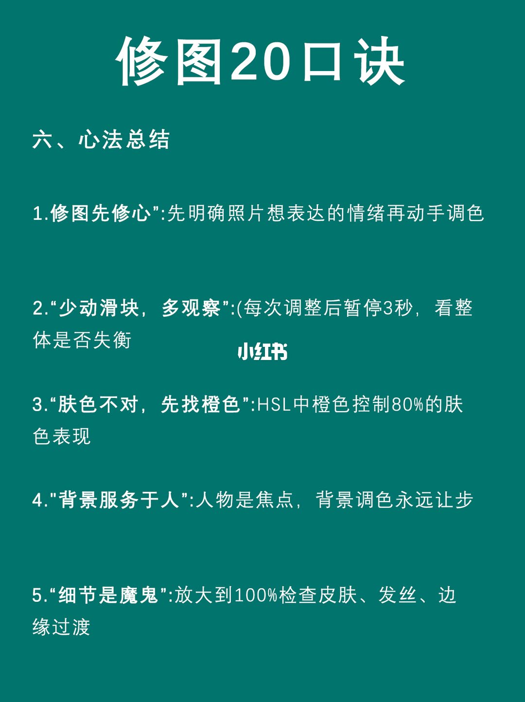
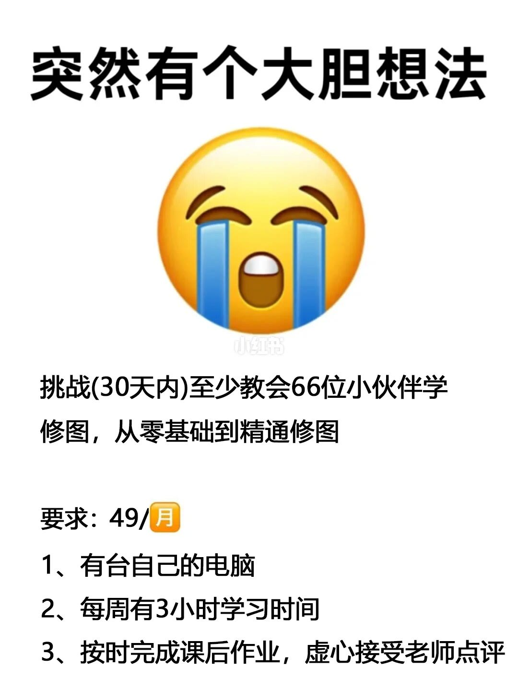

基础修图：先校色，再谈风格

整页深青底、白字，中央有小红书水印。五条都是引号里的口诀，冒号后是做法。
1.「先校色，后调色」：先矫正白平衡和曝光，再调整风格化色彩。这条只规定顺序，没有滑块数字。
2.「过曝救高光，欠曝提阴影」：高光 -100 救细节，阴影 +100 拉回暗部。两个数字都写在这一条里，没有写软件、没有写是全局还是局部。
3.「肤色透亮不假白」：HSL 中橙色明度 +15、饱和度 -10，色相右偏 1～2。右偏没有写成角度或色相环刻度。
4.「背景杂乱靠虚化」：背景模糊，再降饱和，突出人物主体。没有模糊半径，也没有饱和度要降多少。
5.「画面发灰加对比」：S 曲线拉中间调，黑色 -5，白色 +5。S 曲线没有画出控制点。
人像精修：皮肤、眼睛、头发、嘴唇、颈肩

1.「磨皮不磨骨」：保留五官轮廓锐度，只柔化皮肤纹理。没有磨皮强度。
2.「眼神光是点晴笔」：用局部工具提亮瞳孔高光，加冷白更清澈。图面第二字是「晴」，不是常见写法「点睛」，也没有「之」字。冷白没有色温数字。
3.「发丝发光靠径向」：头发边缘加暖金色渐变，模拟逆光。收尾引号的朝向在图上不整齐。没有渐变的范围和透明度。
4.「唇色饱和不过界」：红色饱和度 +20，明度 -5，避免荧光感。这里动的是红色，不是上一页肤色用的橙色。
5.「颈肩阴影要自然」：用画笔压暗颈部交界线，增强立体感。没有画笔流量和压暗多少。
风格化：五套看起来互相打架的配方

1.「胶片复古三要素」：暗部加青，高光微黄，颗粒强度 15%。「微黄」没有数字。
2.「日系清新低对比」：对比度 -20，阴影加青绿，高光柔白。青绿和柔白没有数字。
3.「森系冷调绿不艳」：绿色色相偏青，饱和度 -30，明度 +10。色相偏青没有写偏多少。
4.「韩系奶油灰粉调」：高光加粉，阴影加灰，整体降纹理。加粉、加灰、降纹理都没有数字。
5.「暗黑情绪靠蓝灰」：整体色温偏蓝，阴影加灰，降低橙色饱和。偏蓝和降多少饱和都没有数字。这一条和第一页「橙色饱和度 -10」动的是同一路橙色，方向都是降，但用途一个是肤色透亮，一个是暗黑情绪。
实战问题：逆光、天空、衣服、泛红、夜景

1.「逆光脸黑不用慌」：径向滤镜提亮面部，色温 +10 补暖光。提亮多少没有写，只写了色温 +10。
2.「背景过曝加渐变」：天空过曝时，拉渐变滤镜压高光，色温偏蓝。压高光多少、偏蓝多少都没有写。这和第一页「高光 -100」是两种说法：一条给满刻度，一条只说压、并往蓝走。
3.「衣服色彩太抢眼」：单独选中衣服颜色，降饱和 + 明度。加号后面没有数字。降的是饱和，明度是降还是提，图上没有再解释。
4.「皮肤偏红调 HSL」：红色色相右偏（+5），橙色饱和度 -15。橙色饱和这里是 -15，第一页透亮肤色写的是橙色饱和 -10，两条都在降橙色饱和，幅度不同，触发条件也不同。
5.「夜景人像防噪点」：阴影提亮不超过 +50，降噪强度 30～40。降噪没有写单位。阴影上限 +50，和第一页欠曝时「阴影 +100」直接冲突：同一类滑块，夜景这条把上限砍到一半。
光影：明暗分开，再给光上色

1.「立体感靠明暗分」：加深人物轮廓阴影，提亮受光面。这一条左引号在图上缺失，只看见右引号。加深和提亮都没有数字。
2.「侧光加暖，背光补冷」：光源方向加橙黄，背光面微调青蓝。没有色温和色相数字。
3.「阴天补光靠色温」：整体色温 +10，色调 +5，模拟阳光感。色温 +10 和第四页逆光脸的色温 +10 是同一个数字，一个是整体，一个是径向滤镜里的面部。
4.「光斑染色增氛围」：用色彩蒙版给光斑叠加暖黄或青绿色。暖黄和青绿并列，没有说何时选哪一个，也没有透明度。
5.「高光溢出加柔焦」：柔光图层，高斯模糊 5%，透明度 30%。左引号同样缺失。模糊写成百分号，没有写半径像素，不能把 5% 换成某个像素值。透明度 30% 是这一条里写清的另一项。
心法：先定情绪，再少动滑块

1.「修图先修心」：先明确照片想表达的情绪，再动手调色。左引号缺失。没有列出情绪和参数的对应表。
2.「少动滑块，多观察」：每次调整后暂停 3 秒，看整体是否失衡。图上用了左括号，右括号没有出现。
3.「肤色不对，先找橙色」：HSL 中橙色控制 80% 的肤色表现。80% 是作者的判断，图上没有测量或样片。
4.「背景服务于人」：人物是焦点，背景调色永远让步。这和第一页「背景杂乱靠虚化」、第四页压天空、第三页给背景上风格色，方向一致，但「永远」没有例外条件。
5.「细节是魔鬼」：放大到 100% 检查皮肤、发丝、边缘过渡。检查项写了三个，没有写不合格时退回哪一条口诀。
最后一页是招生，不是第 31 条口诀

这一页不再用深青底，也没有「修图20口诀」页眉。上方是「突然有个大胆想法」，中间一个黄色大哭表情，表情下方有浅的小红书水印。正文是：挑战（30 天内）至少教会 66 位小伙伴学修图，从零基础到精通修图。
要求写成 49/月，月份在一个橙色小标记里。下面三条：1、有台自己的电脑；2、每周有 3 小时学习时间；3、按时完成课后作业，虚心接受老师点评。没有课程大纲，没有软件名，也没有和前六页口诀的对应。
收尾
结论
这套图不是 20 条，而是 30 条编号口诀加一页招生。前四节各 5 条，加总正好 20，对得上标题；第五、六节又各 5 条，页眉却仍写 20。能拿走的操作顺序是：先定情绪，先校白平衡和曝光，再做风格；肤色问题先看橙色；人物优先于背景；每动一次滑块停 3 秒，最后放大到 100% 看皮肤、发丝和边缘。图上的具体数字只在写出来的那几条里成立，不能推广成所有滑块的默认值。
支撑页
- 条数：第 1/7 至 6/7 页各 5 条，合计 30；前四节合计 20。第 7/7 页是 66 人、30 天、49/月和三条报名条件。
- 顺序：第 1/7 页「先校色，后调色」；第 6/7 页「先明确情绪再调色」「少动滑块，暂停 3 秒」「放大到 100%」。
- 写了数字的条目：第 1/7 页高光 -100、阴影 +100、橙色明度 +15、饱和度 -10、色相右偏 1～2、黑色 -5、白色 +5；第 2/7 页红色饱和 +20、明度 -5；第 3/7 页颗粒 15%、对比度 -20、绿饱和 -30、绿明度 +10；第 4/7 页色温 +10、红色色相 +5、橙色饱和 -15、阴影不超过 +50、降噪 30～40；第 5/7 页色温 +10、色调 +5、高斯模糊 5%、透明度 30%；第 6/7 页 3 秒、橙色 80%、放大 100%。
- 互相打架的数字在第 1/7 页阴影 +100 和第 4/7 页阴影不超过 +50；橙色饱和 -10（第 1/7 页）和 -15（第 4/7 页）。
边界
- 七页都没有软件名称。径向滤镜、渐变、HSL、S 曲线和柔光图层、高斯模糊混在一起，不能默认是某一个软件的同一套滑块。
- 没有前后对比图。颗粒 15%、对比度 -20、模糊 5% 都是作者写下的起点，不是测量结果。高斯模糊的 5% 不能改写成像素半径。降噪 30～40 没有单位。衣服那条「降饱和 + 明度」没有数字，明度方向无法确认。
- 第 2/7 页口诀是「点晴笔」。第 5/7 页第 1 条、第 5 条和第 6/7 页第 1 条左引号缺失。第 6/7 页第 2 条只有左括号。
- 第 7/7 页的 49/月、66 人、每周 3 小时是招生条件，不能当成修图参数，也不能从这页推出课程教了什么。